کار با توابع و ماژول ها
صفحه ۴۸
واحد یادگیری 2
کار با توابع و ماژول ها
آیا تابهحال اندیشیدهاید
اگر بخواهید یک مجموعه از اعداد بدون تکرار بسازید، یا ترتیب دادهها را حفظ کنید و تغییرناپذیر باشد، از چه نوع دادهای استفاده میکنید؟
فرض کنید میخواهید اطلاعات یک دانشآموز مثل نام، سن و نمرات او را ذخیره کنید و سریع به هر مورد دسترسی داشته باشید، چه ساختار دادهای مناسب است؟
اگر بخواهید یک عمل خاص را چند بار در برنامه استفاده کنید، بدون اینکه کد را تکرار کنید، چه راهی وجود دارد؟
چگونه میتوانید در یک تابع تعداد زیادی داده را پردازش کنید یا عملیات تکراری انجام دهید، بدون اینکه کد طولانی شود؟
چگونه میتوانید از کدهای آماده دیگران استفاده کنید؟ چه تفاوتی بین تابع و متد وجود دارد؟
در پایان از هنرجو انتظار میرود
1 مجموعهها و توپِلها را تعریف کند، عناصر آنها را اضافه یا حذف کند و کاربرد هریک را بداند.
2 دیکشنری بسازد، کلید و مقدار اضافه کند، دادهها را با کلیدها بازیابی کند و کاربرد دیکشنری را در ذخیرهسازی اطلاعات بداند.
3 هنرجو قادر باشد توابع ساده بنویسد، پارامترها و آرگومانها را استفاده کند و مقدار بازگشتی تابع را دریافت و به کار ببرد.
4 هنرجو بتواند توابع پیچیدهتری بنویسد، از حلقهها در توابع استفاده کند و عملیات تکراری را در توابع مدیریت کند.
5 ماژولها را وارد کند، توابع و کلاسهای آماده را در برنامه خود استفاده کند و ماژولهای استاندارد پایتون را شناسایی کند.
6 ماژولهای محلی را ایجاد و استفاده کند.
استاندارد عملکرد
هنرجو بتواند توابع و ماژولها را ایجاد و استفاده کند، دادهها و عملیات تکراری را با توابع مدیریت کند، از ماژولهای محلی بهره ببرد و تفاوت بین تابع و متد را تشخیص دهد.
صفحه ۴۹
در برنامهنویسی، هرچه برنامهها بزرگتر و پیچیدهتر میشوند، نیاز به سازماندهی و استفاده مجدد از کد بیشتر حس میشود. توابع و ماژولها ابزارهایی هستند که به برنامهنویس کمک میکنند تا کدهای خود را مرتب، قابل فهم و قابل استفاده دوباره بسازد. در این واحد یادگیری، شما با ساخت توابع، استفاده از پارامترها و مقدار بازگشتی، نوشتن توابع پیشرفته با حلقهها و همچنین استفاده از ماژولهای آماده و ماژولهای محلی آشنا میشوید. با یادگیری این مفاهیم، میتوانید برنامههای سازمانیافتهتر و حرفهایتری ایجاد کنید.
مجموعهها (set)
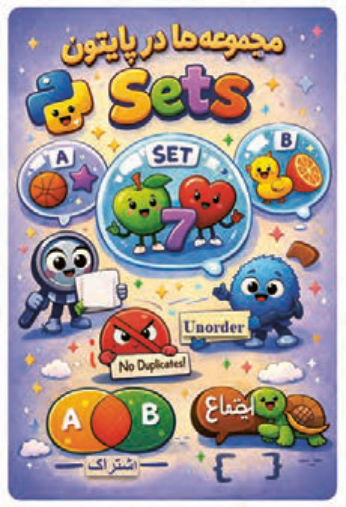
مجموعهها برای ذخیره چند مقدار در یک متغیر استفاده میشوند. مجموعه یکی از چهار نوع دادۀ پایتون است که برای ذخیرهسازی انواع دادهها مثل اعداد صحیح، اعداد اعشاری، رشتهها، بولینها و توپلها (tuple) بهصورت مجموعهای بهکار میرود.
شکل 97
ساخت set :
استفاده از آکولاد {}:
این روش معمولاً برای ساختن مجموعهای از عناصر مشخص و از پیش تعیینشده استفاده میشود.
پس از هر بار اجرای برنامه مشاهده خواهید کرد که ترتیب نمایش اعضای مجموعه فرق میکند (شکل98).
یعنی set ترتیب نمایش عناصر را تضمین نمیکند و Unorder است.
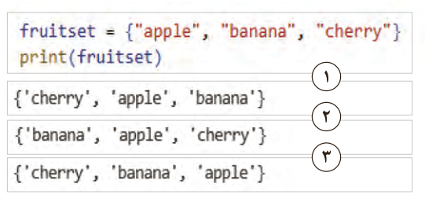
1
2
3
شکل 98
صفحه ۵۰
استفاده از متد (add) برای اضافهکردن عنصر جدید به set:
برنامه را اجرا کنید. مشاهده خواهید کرد که عناصر تکراری به مجموعه اضافه نشدهاند (شکل99).
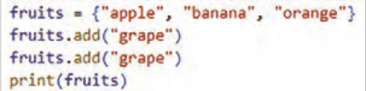
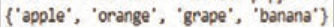
شکل 99
استفاده از متد (remove) برای حذف عنصر از set:
با استفاده از متد remove میتوانید عناصر یک set را حذف کنید.
مثال: با استفاده از متد remove عنصر "banana" از مجموعه حذف شده است (شکل100).
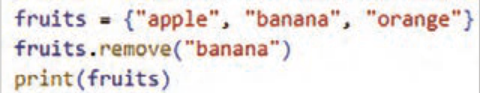
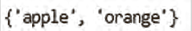
شکل 100
درصورتیکه عضو وجود نداشته باشد در زمان اجرا پیغام خطا نشان داده میشود (شکل101).
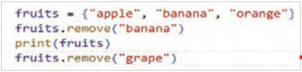
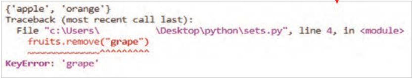
شکل 101
کنجکاوی
در مورد سایر متدهای مربوط به set از سایت www.w3schools.com تحقیق کنید و در کلاس ارائه دهید.
صفحه ۵۱
استفاده از in برای بررسی وجود عنصر در set:
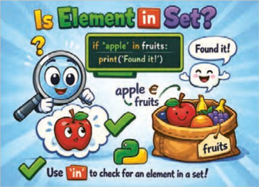
شکل 102
مثال: در کد شکل 103 وجود عنصر"grape" در مجموعه fruits مورد بررسی قرار گرفته است. خروجی کد نشان می دهد این عنصر در مجموعه وجود ندارد.
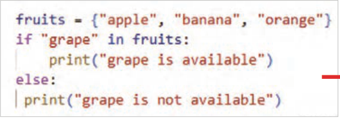
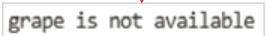
شکل 103
فعالیت
برنامهای بنویسید که یک set از اعداد داشته باشد و بررسی کند عدد 10 در set وجود دارد یا خیر.
فعالیت
مجموعهای از میوهها وجود دارد:
}"fruits = {"apple", "banana", "orange", "grape
برنامهای بنویسید که کاربر نام میوهای وارد کند و اگر در set بود، پیغام دهد که آن میوه درون مجموعه موجود است و set نهایی را چاپ کنید.
صفحه ۵۲
دیکشنری (dictionary)
نوع داده dictionary شبیه دفترچه تلفن است که هر نام با یک شمارهتلفن مرتبط است.

دیکشنریها از تعدادی جفت کلید:
مقدار (key:value) تشکیل شدهاند که به هر یک از آنها item گفته میشود. هر کلید به یک مقدار خاص اشاره دارد.
برای ایجاد dictionary آیتمها درون {} قرار گرفته و با کاما از یکدیگر جدا میشوند. همچنین هر کلید و مقدار آن با علامت دونقطه از هم جدا شده است.
شکل 104
در مثال شکل105 یک dictionary شامل سه آیتم (کلید و مقدار) به نام cardic تعریف شده است:


شکل 105
برای دسترسی به یک مقدار در dictionary بعد از نام dictionary، کلید، داخل براکت [] قرار داده میشود (شکل106).
مثال: در کد شکل106 یک دیکشنری به نام person با 3 آیتم (کلید، مقدار) تعریف شده است. برای نمایش هر یک از عناصر داخل این دیکشنری از براکت [] استفاده شده است.

شکل 106
صفحه ۵۳
نکته
اگر هر عنصر دارای عنوان مشخص باشد (مانند نام دانشآموز و نمره او)، استفاده از دیکشنری بهتر از لیست است؛ زیرا در دیکشنری میتوان مستقیمًا با نام کلید به مقدار معادل آن دسترسی داشت و نیازی به دانستن اندیس عنصر نیست.
فعالیت
یک دیکشنری به نام book بسازید که اطلاعات یک کتاب را نگه دارد:
"title": "python Basic"
"author: "Fatemeh
250:pages
نام نویسنده (author) و تعداد صفحات (pages) را چاپ کنید.
کلیدهای متفاوت میتواند مقادیر یکسان داشته باشند.
مثال: دیکشنری status دارای دو آیتم است (شکل107).
آیتم اول: "user1":"active"
آیتم دوم: "user2":"active" کلیدها یکسان هستند ولی مقادیر هریک از آنها متفاوت است.
در dictionary کلیدهای یکسان نمیتوانند مقادیر یکسان داشته باشند. کلیدهای تکراری باعث بازنویسی مقدار قبلی میشوند، نه مقدارهای تکراری.


شکل 107
در مثال شکل 108 دیکشنری car_dic دارای پنج آیتم است که دو تای آنها دارای کلیدهای با نام یکسان هستند. پس مقدار جدید به جای مقدار قبلی جایگزین میشود.


شکل 108
صفحه ۵۴

برای ساخت یک dictionary خالی از {} استفاده میشود (شکل109).
مثال: یک دیکشنری خالی با نام user تعریف شده است.
شکل 109
اضافهکردن item جدید به dictionary:
برای اضافهکردن یک عضو جدید به dictionary در پایتون، کافی است یک کلید جدید را مقداردهی کنید (شکل110).


شکل 110
فعالیت
یک dictionary به نام product با کلیدهای name price ، بسازید. قیمت محصول درون dictionary را تغییر دهید و سپس dictionary را چاپ کنید.
مثال: یک dictionary خالی به نام student بسازید. سپس با استفاده از ورودی name و grade را به dictionary اضافه و در پایان دیکشنری را چاپ کنید (شکل111).


شکل 111
فعالیت
یک dictionary خالی به نام user بسازید. از ورودی مقادیری برای کلیدهای username و password و Age را بگیرید و داخل dictionary ذخیره و در پایان کل اطلاعات کاربر را چاپ کنید.
صفحه ۵۵
حذف عنصر از dictionary:

روشهای مختلفی برای حذف آیتم از dictionary وجود دارد ازآنجمله:
در پایتون برای حذف یک آیتم از dictionary، از دستور del استفاده میشود. با این دستور، کلید و مقدار مربوط به آن به طور کامل از dictionary حذف میشود.
شکل 112

مثال: در مثال کلید age و مقدار آن 20، از dictionary حذف شده است. برنامه را بنویسید و نتیجه را مشاهده کنید (شکل113).
در برنامه مقابل برای حذف آیتم age": 20" از دستور del استفاده شده است. مشاهده میکنید که با این دستور کلید و مقدار آن حذف شدهاند.

شکل 113

درصورتیکه قصد حذف کلیدی را دارید که در dictionary وجود نداشته باشد، برنامه با خطا مواجه میشود؛ بنابراین قبل از حذف، باید وجود کلید بررسی شود. در برنامه مقابل برای جلوگیری از خطا پیش از حذف عنصر از لیست، وجود آن بررسی شده است.
برنامه را وارد کرده و نتیجه را مشاهده کنید (شکل114).
شکل 114
صفحه ۵۶
برای حذف عنصر از dictionary میتوانید از متد pop() نیز استفاده کنید. متد pop()، عنصری که نام کلید مشخص شده را دارد، حذف میکند. (key)dictionary.pop مثال: در کد (شکل115) عنصر "price " از دیکشنری product با استفاده از دستور product.pop("price") حذف شده است.


شکل 115
متد ()pop علاوه بر حذف آیتم، میتواند مقدار آیتم حذفشده را برگرداند (شکل116).


شکل 116
فعالیت
یک دیکشنری به نام inventory بسازید که شامل:
,inventory = {"Bag": 5, "Ball": 8, "Laptop": 3
}Mouse": 10, "Flash memory": 14"
وجود کالایی با نام "Bag" را بررسی و در صورت وجود، پیغام مناسبی چاپ شود که نشاندهندۀ وجود کالا باشد و سپس آن آیتم را با متد ()pop حذف کنید.
مقدار حذفشده را چاپ کنید.
اگر کالا وجود نداشت، پیغامی مبنی بر عدم وجود آن نمایش داده شود.
سپس dictionary جدید را چاپ کنید.
صفحه ۵۷
پروژه بازی Quiz
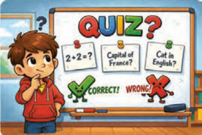
در این بازی ابتدا منویی که شامل انواع سؤالات است نمایش داده میشود و کاربر سؤال موردعلاقهاش را انتخاب میکند و سپس به سؤالات پاسخ میدهد، در صورت پاسخ صحیح یک امتیاز دریافت میکند و در غیر این صورت پیام پاسخ و در صورت تمامشدن سؤالات، امتیاز کاربر نمایش داده میشود.
شکل 117
مرحله ۱: در این مرحله باید منویی ایجاد کنید که شامل انواع سؤالات باشد. برای شروع دو نوع سؤال در منو قرار دهید. در دیکشنری menu به هر عدد یک نوع سؤال اختصاصیافته است. در صورت انتخاب عدد ۳، کاربر از بازی خارج میشود (شکل118).
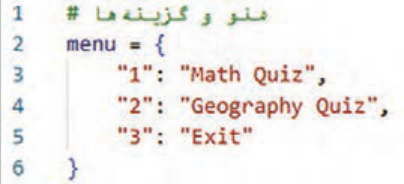
شکل 118
مرحله 2: سؤالات مربوط به هر نوع سؤال را بنویسید. دو دیکشنری math_quiz برای سؤالات ریاضی و geo_quiz برای سؤالات مربوط به مکانهای جغرافیایی، هر کدام سه عنصر که شامل سؤال و پاسخ آن است (شکل119).
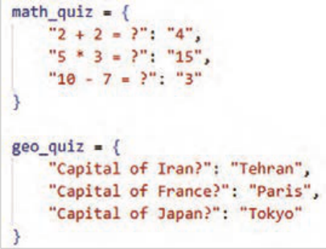
شکل 119
صفحه ۵۸
مرحله ۳: در این مرحله دستوراتی بنویسید که منوها را نمایش دهد.
بعد از نمایش پیام خوشامدگویی و نمایش عنوان :menu برای هر یک از عناصر داخل دیکشنری، شماره menu و متن آن با یک علامت "-" از هم جدا شده و نمایش داده میشود تا کاربر بتواند از میان آنها یکی را انتخاب کند (شکل120).
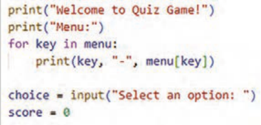
شکل 120
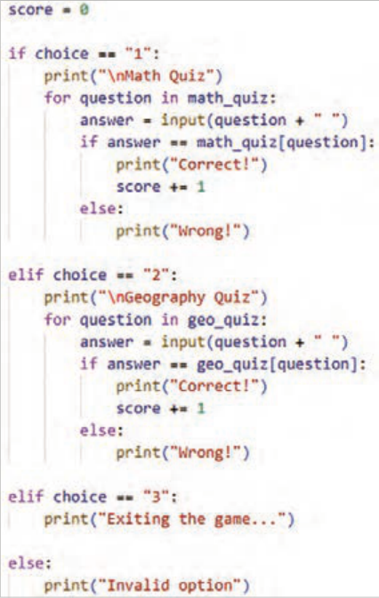
مرحله ۴: در این مرحله دستورات مربوط به انتخاب منو را بنویسید (شکل121).
شکل 121
صفحه ۵۹
نکته
هر جایی که n\ نوشته شود، خروجی از آن نقطه به خط بعدی میرود.
مرحله 5: در این مرحله دستوراتی بنویسید که امتیازات کسبشده را نمایش دهد. امتیاز کاربر در صورت انتخاب گزینه "1" و یا "2" نمایش داده میشود (شکل122).
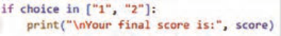
شکل 122
مرحله 6: کدها را نوشته و برنامه را اجرا کنید!
فعالیت
بخشهای جدید Quiz (مثًًلا Sport ,Science) را اضافه کنید.
برای جواب غلط، یک پیام توضیحی بدهید.
امکان انتخاب چند بخش بهصورت پشتسرهم را اضافه کنید.
کنجکاوی
با مراجعه به دیکشنریهای مرجع تلفظ لغات را دقیق یاد بگیرید.
https://dictionary.cambridge.org/dictionary/english/tuple
توِپل (Tuple)
توپل در پایتون دنبالهای از دادههای ترتیبی و غیر قابل تغییر است. به کمک توپلها میتوانید چندین مقدار از نوعهای دادهای مختلف را در یک متغیر ذخیره و روی آنها عملیات انجام دهید. این ساختار داده را زمانی استفاده کنید که بخواهید دادهها در طول برنامه، تصادفاً توسط خود شما و یا سایر برنامهنویسان هم تیمی شما، تغییر نکنند.
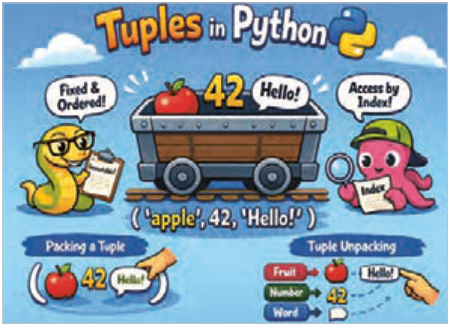
شکل 123
ایجاد Tuple:
tuple_name = (data1, data2, data3,…)
صفحه ۶۰
مثال: یک tuple با سه عضو برای نگهداری نام کاربری مدیران ارشد شرکت ایجاد و سپس آن را چاپ کند (شکل124).
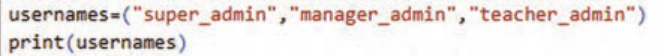
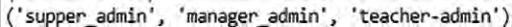
شکل 124
مثال: در برنامۀ شکل 125 از یک توِپل برای نگهداری نام روزهای هفته استفاده شده است، زیرا نام روزهای هفته تغییرپذیر نیستند، پس این نوع ساختار داده مناسب نگهداری این مقادیر میباشد.
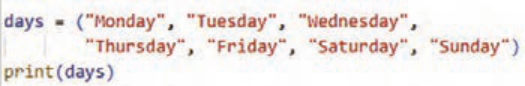
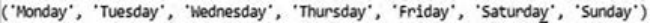
شکل 125
دسترسی به عناصر Tuple:
مانند لیستها عناصر توپل هم دارای index هستند و دسترسی به عنصر با شمارۀ ایندکس آن انجام میشود.
مثال: در این برنامه ابتدا یک توپل به نام port_name برای نگهداری نام درگاههای ورودی یک سیستم رایانهای ایجاد و سپس عنصر سوم آن نمایش داده شده است. دقت کنید ایندکس عناصر از صفر است (شکل126).
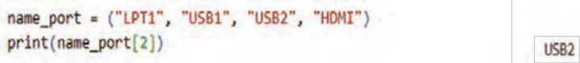
شکل 126
عناصر یک توپل تغییرناپذیر (immutable) هستند. یعنی اگر بخواهید بعد از مقداردهی اولیه، آنها را تغییر دهید، برنامه پیغام خطا نمایش میدهد.
صفحه ۶۱
مثال: در مثال شکل127 تلاش شده است که مقدار عنصر دوم توپل تغییرکند، ولی اجرای برنامه با خطا مواجه شده است.
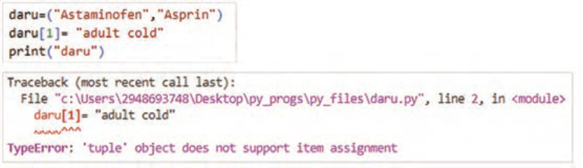
شکل 127
کنجکاوی
تحقیق کنید آیا میتوانید تعداد عناصر یک توپل را تغییر دهید یا نه؟ برنامهای بنویسید که نتیجه تحقیق شما را نشان دهد.
به نظر شما مزیت اصلی توپلها چیست که برنامهنویس را ملزم میکند از آن استفاده کند؟
حذف Tuple: در پایتون امکان حذف عناصر یک توپل وجود ندارد. ولی میتوانید کل یک توپل را با استفاده از دستور del حذف کنید.
مثال: در این برنامه با دستور del توپل days حذف شده است. بعد از اجرای آن هم پیغامی مبنی عدم تعریف توپل days نمایش داده میشود (شکل128).
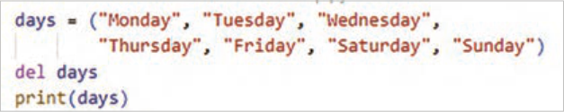
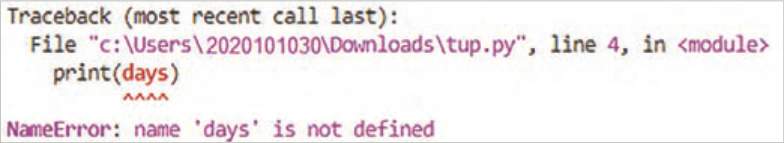
شکل 128
صفحه ۶۲
تابع (Function)
تابع، بلاک یا قطعه کدی است که یکبار آن را تعریف کرده و بارها آن را در چندین مکان برنامه میتوان فراخوانی کرد.
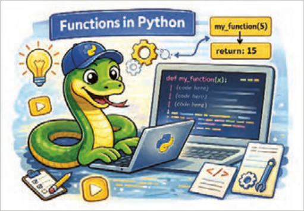
شکل 129
مزایای استفاده از تابع:
برنامهنویس با تعریف یک تابع، تنها یک بار کد مورد نظر را مینویسد و سپس در هر نقطهای از برنامه یا حتی در پروژههای دیگر که نیاز باشد، آن را فراخوانی و استفاده میکند.
تقسیم کد به توابع کوچک و مشخص، درک و فهم کد را به طور چشمگیری افزایش میدهد.
یافتن و رفع اشکالات و اعمال تغییرات در کد بسیار سادهتر میشود.
سازماندهی کدها بهصورت منطقی و مرتب و ساختار کلی برنامه آسانتر میشود.
تعریف تابع: یک تابع با استفاده از کلمه کلیدی def تعریف میشود و به دنبال آن نام تابع و پرانتز قرار میگیرد.
فرم کلی تعریف تابع با پارامتر ورودی به شکل زیر است:
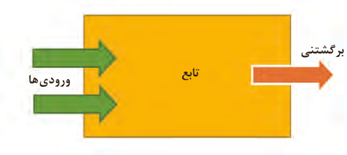
:(پارامترهای تابع) نام تابع def
مقدار برگشتنی
دستور یا دستورات بدنه تابع
تابع
ورودیها
مقدار یا مقادیر return
شکل 130
صفحه ۶۳
مثال: در این برنامه تابعی به نام show_store_name تعریف شده و یک دستور print ("Digital Online Store") در آن نوشته شده است (شکل131).
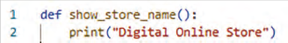
شکل 131
مثال: در این برنامه نیز یک تابع به نام greet تعریف شده است و دستور print("Hello! ") در آن نوشته شده است (شکل132).
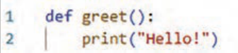
شکل 132
مثال: در این برنامه تابع greet() بدون پارامتر تعریف شده است، پس در هنگام فراخوانی نیازی به ارسال آرگومان ندارد (شکل133).
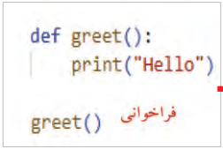
خروجی
شکل 133
مثال: در این برنامه نیز تابع بدون پارامتر تعریف شده است. در هنگام فراخوانی نیازی به ارسال آرگومان ندارد (شکل134).
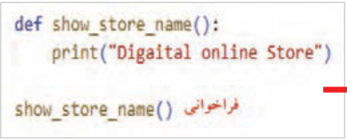
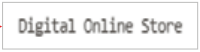
شکل 134
صفحه ۶۴
پارامتر و آرگومان (Parameters & Arguments) پارامتر چیست؟ تابع میتواند ورودیهایی را دریافت کند. به ورودیهای تابع در زمان تعریف تابع، پارامتر (parameter) گفته میشود.
آرگومان چیست؟ ورودیهای تابع که هنگام فراخوانی تابع به آن داده میشود.
پس از تعریف، تابع باید فراخوانی شود تا اجرا شود. اگر تابع را فقط تعریف کنید ولی فراخوانی نشود هیچ اتفاقی نمیافتد. مثل این است که اصلاً تعریف نشده باشد.
برای فراخوانی تابع نام آن را نوشته و به تعداد پارامترها، به آن آرگومان ارسال کنید (در اصطلاح پاسدادن گفته میشود) یک تابع را بارها میتوانید فراخوانی کنید.
نحوه فراخوانی تابع به شکل زیر است:
(آرگومانهای تابع) :نام تابع
مثال: در مثال شکل135 تابع show_product(name, price) با دو پارامتر name , price تعریف شده است. در زمان فراخوانی هم باید دو مقدار بهعنوان آرگومان ارسال شود.
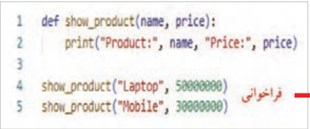
خروجی
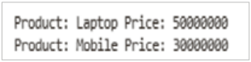
شکل 135
مثال: در مثال شکل136 تابع print_age(age) دارای یک پارامتر به نام age است. در زمان فراخوانی هم یک آرگومان به آن ارسال شود. همانطور که مشاهده میکنید تابع print_age(age) دو بار و با دو آرگومان متفاوت فراخوانی شده است.
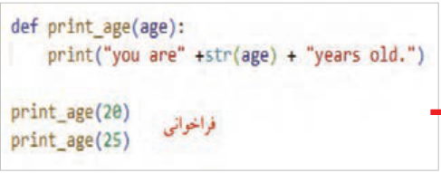
خروجی
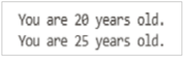
شکل 136
صفحه ۶۵
نکته
ترتیب، تعداد و نوع پارامترها (در زمان تعریف تابع) با ترتیب، تعداد و نوع آرگومانها (در زمان فراخوانی تابع) باید با هم یکسان باشد.
اگر ترتیب و نوع ارسال آرگومانها رعایت نشود، خروجی اشتباه تولید میشود. در هنگام اجرا خطا نمیدهد؛
ولی منطق برنامه نادرست است.
راهحل، استفاده از آرگومان کلیدی (keyword arguments) یا همان آرگومانهای با نام است، یعنی میتوان در زمان فراخوانی تابع، نام پارامتر را بههمراه عملگر انتساب نوشت.
مثال: به کدهای شکل 137 دقت کنید. خروجیها را بررسی کنید. فراخوانی بدون رعایت ترتیب آرگومانها، باعث شده اول قیمت و سپس نام کالا چاپ شود و این منطق نادرستی است.
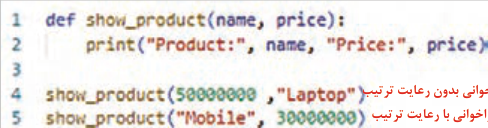
خروجی
فراخوانی بدون رعایت ترتیب فراخوانی با رعایت ترتیب
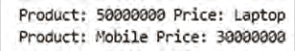
شکل 137
مثال: در مثال شکل 138 برای جلوگیری از خروجی اشتباه با ارسال آرگومانها بدون ترتیب، از آرگومانهای کلیدی استفاده شده است. برنامه را نوشته و نتیجه را با مثال قبل مقایسه کنید.
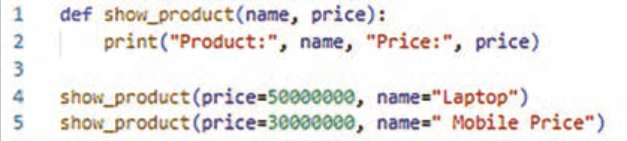
شکل 138
نکته
وقتی آرگومانها بدون نام پارامتر به تابع داده شود، ترتیب ارسال آنها مهم است، چون هر آرگومان بهترتیب به پارامترهای تابع نسبت داده میشود. به این آرگومانها آرگومانهای موقعیتی
(positional arguments) گفته میشود.
فعالیت
یک تابع به نام square بنویسید که یک عدد بگیرد و مربع آن را چاپ کند.
صفحه ۶۶
نکته
تابعی بنویسید که دو عدد را بهعنوان پارامتر دریافت و حاصلجمع آنها را نشان دهد.
نکته
تابعی بنویسید که نام ۳ کاربر را از ورودی بهعنوان پارامتر دریافت و آنها را چاپ کند.
مثال: تعداد آرگومانهای ارسالی به تابع باید با تعداد پارامترهای آن در زمان تعریف تابع برابر باشد. در غیر این صورت در زمان اجرای پیام خطا نمایش داده میشود (شکل139).
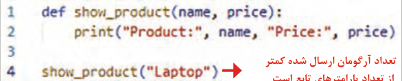
تعداد آرگومان ارسال شده کمتر از تعداد پارامترهای تابع است
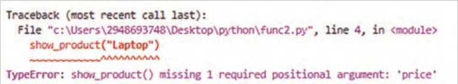
پیام خطای نمایش داده شده پس از اجرای برنامه
شکل 139
نکته
میتوان برای پارامتر مقدار پیشفرض تعیین کرد. اگر آرگومان داده نشود، مقدار پیشفرض استفاده میشود.
مثال: در اولین خط کد شکل 140، تابع با یک پارامتر تعریف شده است. در خط ۴ هنگام فراخوانی، آرگومان آن ارسال نشده است، بنابراین از مقدار پیشفرض آن "Tehran" استفاده میشود. در خط ۵ تابع با آرگومان فراخوانی شده است. برنامه را نوشته و نتیجه را بررسی کنید. مقدار پیشفرض را تغییر دهید و برنامه را اجرا کنید.
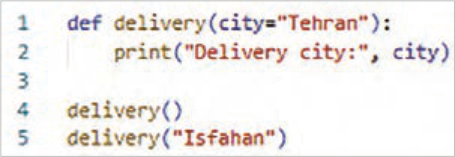
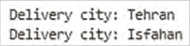
شکل 140
صفحه ۶۷
مثال: در این مثال تابع با دو پارامتر تعریف شده که مقدار پیشفرض برای آنها وجود دارد. در هر بار فراخوانی آرگومانها با روشهای مختلف ارسال شدهاند. برنامه را نوشته، نتیجه را بررسی کنید. مقدار پیشفرض را تغییر دهید و دوباره برنامه را اجرا کنید (شکل141).
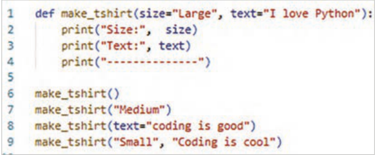
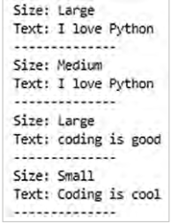
شکل 141
مقدار بازگشتی تابع (Return Value) تابع میتواند مقداری را محاسبه کند و به برنامه برگرداند تا بعدًا از آن استفاده شود که به آن مقدار بازگشتی ) Return Value) گفته میشود. بدون return تابع کار خودش را انجام میدهد (مثلاًً چاپ میکند) ولی هیچ مقداری به بیرون برنمیگرداند و اگر بخواهید نتیجه تابع را در متغیر ذخیره کنید مقدار آن None میشود (شکل142).
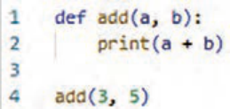
شکل 142
مثال: با اجرای برنامه شکل143 مقدار 8 نمایش داده میشود. اما عدد8 ذخیره نشده و همچنین جای دیگری نمیتوان از آن استفاده کرد.
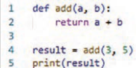
حالا برنامه را با استفاده از return تغییر داده و نتیجه را مشاهده کنید.
این بار: تابع عدد 8 را برگردانده و مقدار بازگشتی در متغیر result ذخیره میشود و میتوان دوباره از آن استفاده کرد.
شکل 143
مثال: بدون استفاده از return فقط (price * count) محاسبه میشود و هیچ مقداری را به برنامه برنمیگرداند، پس با فراخوانی تابع 200000),2( total_ price در متغیر x مقدار None ذخیره و با اجرای برنامه مقدار None هم چاپ میشود
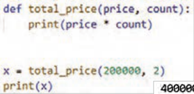
(شکل144).
شکل 144
صفحه ۶۸
مثال: با استفاده از return مقدار محاسبهشده به برنامه برگردانده میشود و میتوان آن را در متغیر x ذخیره کرد و با چاپ متغیر x مقدار ذخیرهشده، نمایش داده میشود (شکل145).
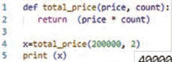
شکل 145
فعالیت
یک تابع به نام avg_numbers بسازید که سه عدد دریافت کرده و میانگین آنها را برگرداند.
مثال: تابعی بنویسید که قیمت کل خرید را حساب کند و اگر تعداد خرید بیشتر از ۵ بود، 10٪ تخفیف بدهد.
داخل تابع از if استفاده شده تا شرطی بررسی شود.
اگر شرط (count > 5) برقرار باشد مقدار با تخفیف برگردانده میشود.
اگر شرط برقرار نباشد، مقدار بدون تخفیف برگردانده میشود.
از return استفاده شده است تا نتیجه محاسبه شده به بیرون تابع برگردد و بتوان آن را چاپ یا ذخیره کرد (شکل146).
شکل 146
استفاده از حلقه در داخل تابع:
استفاده از حلقه در داخل تابع به این منظور است که بتوانید دستورات مشخصی را چندین بار و بهصورت خودکار، تا زمانیکه شرط تعیینشده برقرار است یا تعداد دفعات مشخصی تکرار شوند، اجرا کنید. این کار باعث کاهش تکرار کد، افزایش خوانایی و بهینهسازی عملکرد تابع میشود.
مثال: در این مثال، تابع تعریف شده اعداد طبیعی کوچکتر از 6 را چاپ میکند. برنامه را اجرا و نتیجه را مشاهده کنید (شکل147).
شکل 147
صفحه ۶۹
مثال: ابتدا تابع تعریف شده یک پارامتر به نام names دارد که انتظار میرود آرگومانهای دریافتی آن لیستی از اسامی باشند (شکل148).
با حلقه for عناصر لیست را یکییکی دریافت و به متغیر name اختصاص میدهد.
دستور print هم داخل حلقه اجرا شده و اسامی را جداگانه چاپ میکند.
قبل از فراخوانی تابع در اولین خط از برنامه، لیست students که شامل نام دانشآموزان است ایجاد میشود.
سپس تابع با آرگومان students فراخوانی میشود. حلقه داخل تابع یکییکی اسامی داخل لیست را چاپ میکند.
شکل 148
فعالیت
تابع نوشتهشده حاصل جمع تمام اعداد یک لیست را محاسبه میکند. برنامه را بنویسید و اجرا کنید. با راهنمایی هنرآموز محترم خود خطوط کد نوشتهشده در آن را توضیح دهید. تابع را به نحوی تغییر دهید که عناصر لیست را کاربر از صفحهکلید وارد کند.
فعالیت
تابع نوشتهشده که طول رشته ورودی کاربر را محاسبه و نمایش میدهد. برنامه را اجرا و آن را بررسی و همچنین با راهنمایی هنرآموز محترم خود کدهای برنامه مقابل را توضیح دهید.
فعالیت
کدهای مقابل بیشترین مقدار را در بین اعداد یک لیست محاسبه کرده و نمایش میدهد. کد را اجرا و خطوط آن را توضیح دهید.
صفحه ۷۰
فعالیت
تابعی بنویسید که تفاوت نمرۀ دو دانشآموز را محاسبه و مقدار آن را برگرداند. با راهنمایی هنرآموز محترم خود کدهای برنامۀ مقابل را توضیح دهید.
انواع توابع در پایتون User-Defnied Function (توابعی که برنامهنویس تعریف میکند): توابعی که تاکنون تعریف کردید در این دسته قرار دارند.
Built-in functions (یا توابع داخلی پایتون): توابعی که در پایتون از قبل تعریف شدهاند و برنامهنویس آنها را در برنامههای خود استفاده میکند. کارهای رایج و تکراری را سریع، ساده و بدون نوشتن کد طولانی انجام میدهد. به کمک توابع داخلی، برنامهها خواناتر، کوتاهتر و کمخطا میشوند.
در بخشهای پیش با برخی از این توابع آشنا شدید، در ادامه نیز کاربرد برخی دیگر را یاد خواهید گرفت.
توابع ریاضی: این توابع فقط یا عمدتاً روی مقادیر عددی کار میکنند (جدول4).
جدول4
نام تابع
کاربرد
مثال
خروجی
abs()محاسبه قدرمطلق عددprint(abs(-12))
12
print(round(3.6))
4
round()گرد کردن عدد اعشاریprint(round(3.1415, 2))
3.14
pow()محاسبه توانprint(pow(2, 3))
8
int()تبدیل به عدد صحیحprint(int(4.8))
4
float()تبدیل به عدد اعشاریprint(float(5))
50
max()بزرگترین عددPrint(max(3, 9, 5))
9
min()کوچکترین عددPrint(min(3, 9, 5))
3
sum()جمع چند عددPrint(sum([2, 4, 6]))
12
صفحه ۷۱
فعالیت
یک ماشینحساب با استفاده از توابع ریاضی ایجاد کنید. بخشهایی از کدهای مربوط به این برنامه نوشته شده است. با راهنمایی هنرآموز خود آنها را تکمیل کنید و برنامه را اجرا کنید.
صفحه ۷۲
تا این بخش با توابعی مثل print ,len ,type , input ,str آشنا شدهاید. در ادامه با برخی از توابع داخلی غیرریاضی پایتون آشنا خواهید شد.
تابع sorted: این تابع برای مرتبسازی رشته، مجموعه، توپل و دیکشنری مورد استفاده قرار میگیرد و نتیجه را در قالب یک لیست جدید برمیگرداند.
ساختار کلی تابع:
sorted(iterable, reverse=false)
iterable: دادهای که میخواهید مرتب کنید (لیست، رشته، توپل، مجموعه، دیکشنری و …) reverse: اگر true باشد، ترتیب نزولی میشود. پیشفرض (false صعودی)
صفحه ۷۳
مثال: در این مثال تابع sorted رشتهای از کاراکترهای ذخیرهشده در متغیر data را بهصورت صعودی بر اساس کد اسکی کاراکترها مرتب میکند.
شکل 149
فعالیت
نام شهرها را از کاربر دریافت و در یک لیست ذخیره کنید. سپس این لیست را بهصورت نزولی مرتب کنید.
ماژول (module)
ماژول یک فایل است که میتواند شامل چندین تابع، متغیر و کلاس باشد و برای سازماندهی برنامههای بزرگ استفاده میشود. با استفاده از ماژول میتوانید کدهای آماده را دوباره استفاده کنید و برنامۀ خود را کوتاهتر و مرتبتر کنید.
شکل 150
انواع ماژول در پایتون:
ماژول استاندارد (standard) ماژولهایی در پایتون وجود دارند که برنامهنویس فقط آنها را در برنامه خودش وارد میکند و نیازی به تعریف آنها نیست. مثل time، date، random، math و... . به دو روش میتوان از ماژولهای استاندارد استفاده کرد.
روش اول: وارد کردن کل ماژول (import mojvle):
این روش امنترین راه است. چون از تداخل نامها جلوگیری میکند. در این روش باید نام ماژول را قبل از تابع بیاورید.
مثال: Sqrt یک تابع آماده در ماژول math پایتون است، که برای محاسبه جذر اعداد استفاده میشود (شکل151).
شکل 151
صفحه ۷۴
مثال: لیستی از پیامهای انگیزشی بسازید و با استفاده از ماژول random در هر اجرا یک پیام تصادفی چاپ کنید (شکل152).
برنامه را اجرا کنید و نتیجه را بررسی کنید.

شکل 152
فعالیت
برنامهای بنویسید که:
یک عدد تصادفی بین ۱ تا 10 تولید کند. از کاربر بخواهد عدد را حدس بزند.اگر حدس درست بود، پیام شما موفق شدید چاپ کند؛ در غیر این صورت دوباره از کاربر ورودی بگیرد.ضمنًا تعداد دفعات تلاش کاربر را هم چاپ کند.
فعالیت
برنامهای بنویسید که شرایط زیر را داشته باشد:
چند کلمه ازپیشتعیینشده در برنامه وجود داشته باشد.
در هر بار اجرای برنامه، یکی از کلمات بهصورت تصادفی انتخاب شود.
تعداد دفعات مجاز برای حدسزدن، برابر با تعداد حروف کلمه انتخابشده باشد.
درصورتیکه کاربر کلمه را بهدرستی حدس بزند: کلمه نمایش داده شود و پیام تبریک مناسب نمایش داده شود.
در غیر این صورت: پیام پایان بازی نمایش داده شود.
روش دوم: وارد کردن بخشهای خاص (from ... import):
نام تابع import نام ماژول from در این روش، فقط توابع یا متغیرهای موردنیاز از یک ماژول وارد میشود. در این روش کد کوتاهتر و نوشتن سادهتر است.
مثال: فقط توابع sqrt و pow از ماژول math وارد برنامه میشوند (شکل153).

شکل 153
صفحه ۷۵
بعد از این دستور؛ نیازی به نوشتن math.sqrt نیست. مستقیمًا sqrt (25) نوشته میشود.
جدول5- ماژولهای پرکاربرد پایتون
ماژول
کاربرد
mathتوابع ریاضی randomتولید اعداد تصادفی turtleرسم شکل و گرافیک datetimeتاریخ و زمان osکار با سیستمعامل
مثال: نمایش تاریخ و زمان فعلی: در این مثال فقط تابع ()now مورد استفاده قرار گرفته است (شکل154).

شکل 154

مثال: در این مثال، فقط نمایش ساعتِ زمان فعلی، نیاز است. بنابراین از روش دوم واردکردن ماژول استفاده شده است (شکل155).

شکل 155
صفحه ۷۶
فعالیت
با استفاده از ماژول datetime برنامهای بنویسید که سال جاری را نمایش دهد.
فعالیت
(بازی حدس کلمه)، ماژولی بنویسید که:
یک کلمه مشخص داشته باشد. تعداد دفعات مجاز حدسزدن برابر با تعداد حروف کلمه باشد.
اگر کاربر کلمه را درست حدس زد: کلمه چاپ شود و پیام تبریک نمایش داده شود.
اگر کاربر در تعداد مجاز موفق نشد: پیام پایان بازی نمایش داده شود.
این ماژول را در برنامه اصلی استفاده کنید.
ماژول محلی (local):
ماژولهایی هستندکه توسط برنامهنویس نوشته شده است و در برنامه import میشوند.
ابتدا یک فایل پایتون با پسوند py ایجاد کنید. سپس توابع و متغیرها را در آن قرار دهید. سپس میتوانید آنها را با import در برنامه اصلی استفاده کنید.
مثال: فایل my_module.py را ایجاد کنید و در آن کدهای زیر را بنویسید (شکل156).

شکل 156
سپس در برنامه اصلی main.py این کدها را بنویسید (شکل157).

شکل 157
مثال: ابتدا یک فایل با نام math_module.py بسازید و توابع زیر را داخل آن بنویسید (شکل158).

شکل 158
صفحه ۷۷
سپس در برنامه اصلی از آن استفاده کنید (شکل 159).

شکل 159
فعالیت
یک فایل با نام random_module.py بسازید و تابع زیر را داخل آن بنویسید:

randint یک تابع آماده در ماژول random پایتون است که برای تولید عدد صحیح تصادفی در بازهای خاص استفاده میشود.
سپس در برنامه اصلی ماژول ساخته شده را import نموده از آن استفاده کنید.


برنامه را اجرا و خطوط کد را توضیح دهید.
ماژولهای شخص ثالث (3rd party): ماژولهایی که توسط دستور pip install نصب میشوند و در برنامه import میشوند. مثل Django ،Flask, PyGame و...
تفاوت تابع و متد
در مطالب قبل، از دستوراتی مانند ،split() append() و len() استفاده کردهاید، بدون آنکه تعریف رسمی آنها بیان شود.

این موضوع کاملاً طبیعی است و در برنامهنویسی بسیار رایج است؛ زیرا بسیاری از مفاهیم ابتدا با استفاده عملی و سپس با تعریف دقیق معرفی میشوند.
شکل 160
صفحه ۷۸
تابع:(function) دستوری مستقل است که برای انجام یک کار مشخص به کار میرود و به نوع داده خاصی وابسته نیست.
مثال: شمردن تعداد کاربران: تابع len() تعداد کاراکترهای یک رشته را برمیگرداند (شکل161).

شکل 161
مثال: نمایش تعداد کاربران بهصورت رشتهای (شکل162):


شکل 162
متد (Method): نوعی تابع است که به یک کلاس یا شیء مشخص تعلق دارد و برای انجام عملیات روی دادههای همان شیء استفاده میشود.
تفاوت اصلی تابع و متد در نحوۀ استفاده و وابستگی آنهاست؛ تابعها بهصورت مستقل فراخوانی میشوند، اما متدها از طریق یک شیء یا نوع داده و با استفاده از علامت نقطه (.) اجرا میشوند و معمولاً به دادههای داخلی آن شیء دسترسی دارند.
متد lower ,upper: با استفاده از متد lower ,upper میتوانید همه متن را به حروف بزرگ یا کوچک انگلیسی تبدیل کنید.
فعالیت
با راهنمایی هنرآموز محترم خطوط کد مقابل را توضیح دهید.


صفحه ۷۹
متد split رشته را به لیستی از کلمات تجزیه میکند (شکل163).

شکل 163
فعالیت
تابعی بنویسید که یکرشته را از ورودی دریافت کند و تعداد حروف بزرگ، کوچک و اعداد آن را نمایش دهد.
صفحه ۸۰
ارزشیابی شایستگی کار با توابع و ماژولها
استاندارد عملکرد: هنرجو بتواند توابع و ماژولها را ایجاد و استفاده کند، دادهها و عملیات تکراری را با توابع مدیریت کند، از ماژولهای محلی بهره ببرد و تفاوت بین تابع و متد را تشخیص دهد.
نمره
شرایط انجام کار (ابزار،مواد، تجهیزات،
ابزارهای
نتایج
ردیف
مرا حل کار
استاندارد (شاخصها/داوری/نمرهدهی)
کسب
زمان، مکان و ...)
ارزشیابی
ممکن شده
یک set با چند عنصر دلخواه بسازد یک عنصر جدید به set اضافه کند.
یک عنصر از set حذف کند (هم عنصری که وجود دارد و هم عنصری که وجود ندارد تا خطای احتمالی را ببیند). بررسی کند که آیا عنصر خاصی در set وجود دارد یا خیر. یک dictionary خالی بسازد. تفاوت اصلی set با
3
list یا tuple را بداند (مثلاً عدم وجود ترتیب و عناصر تکراری).
کاربرد set در مواقعی که نیاز به حذف موارد تکراری داریم بداند ویژگی کلید، مقدار (key value) در dictionary را توضیح دهد انجام مشاهده کنجکاویها عملی،
1
مجموعهها (Set)
رایانه، vscode نصبشده، 15 دقیقه
چک یک set با چند عنصر دلخواه بسازد یک عنصر جدید به set اضافه کند.
لیست یک عنصر از set حذف کند (هم عنصری که وجود دارد و هم عنصری که وجود ندارد تا خطای احتمالی را ببیند). بررسی کند که آیا عنصر خاصی در
2
set وجود دارد یا خیر. یک dictionary خالی بسازد. تفاوت اصلی set با list یا tuple را بداند (مثلاً عدم وجود ترتیب و عناصر تکراری).
آشنایی با تعاریف در حد توضیح مفاهیم انجام ناقص مراحل1 یک dictionary با چند کلید مقدار بسازد. یک زوج کلید مقدار جدید به dictionary اضافه یک عنصر را بر اساس کلیدش از dictionary حذف کند. سعی کند عنصری را با کلید ناموجود حذف کند تا با خطا مواجه شود و دلیل آن را توضیح دهد. تفاوت بین کلید (key) و مقدار (value) در
3
dictionary را بداند اهمیت منحصربهفرد بودن کلیدها در dictionary را توضیح دهد. روشهای دسترسی به مقادیر در dictionary (با استفاده از کلید) را شرح دهد. انجام کنجکاویها مشاهده
رایانه، vscode نصبشده، فایل تمرینی،
عملی،
2
ساختار داده Dictionary
یک dictionary با چند کلید مقدار بسازد. یک زوج کلید مقدار جدید
15دقیقه
چک به dictionary اضافه یک عنصر را بر اساس کلیدش از dictionary لیست حذف کند. سعی کند عنصری را با کلید ناموجود حذف کند تا با خطا مواجه
2
شود و دلیل آن را توضیح دهد. تفاوت بین کلید (key و مقدار (value در dictionary را بداند آشنایی با تعاریف و حد توضیح انجام ناقص مراحل1 یک tuple با چند عنصر (مثلاً مختصات یک نقطه یا اطلاعات یک شخص) بسازد عناصر tuple با استفاده از اندیس دسترسی پیدا کند تلاش کند یک عنصر را به tuple اضافه یا حذف کند و نتیجه (خطا) را مشاهده و دلیل آن را بیان کند (اختیاری) تلاش کند یک tuple را حذف کند.
3
اصلیترین ویژگی tuple که آن را از list متمایز میکند، بداند؟ اشاره به تغییرناپذیری یا Immutability در چه مواردی استفاده از tuple به list ارجحیت دارد؟ (مثلاً در مواردی که مشاهده داده نباید تغییر کند، یا به عنوان کلید در dictionary) انجام کنجکاویها عملی،
3
ساختار داده Tuple
رایانه، vscode نصبشده، 20دقیقه
پرسش یک tuple با چند عنصر (مثلاً مختصات یک نقطه یا اطلاعات یک شخص) شفاهی بسازد عناصر tuple با استفاده از اندیس دسترسی پیدا کند تلاش کند یک عنصر را به tuple اضافه یا حذف کند و نتیجه (خطا) را مشاهده و تلاش
2
کند یک tuple را حذف کند.
اصلیترین ویژگی tuple که آن را از list متمایز میکند، را بداند.
آشنایی با تعاریف در حد توضیح انجام ناقص مراحل1
صفحه ۸۱
یک تابع ساده بنویسد که فقط یک متن خوشامدگویی را چاپ کند. تابعی بنویسد که دو عدد را به عنوان ورودی (پارامتر) بگیرد و مجموع آنها را چاپ کند. این تابع را با مقادیر مختلف (آرگومان) فراخوانی کند.
3
بداند چرا از توابع در برنامهنویسی استفاده میشود ؟ تفاوت بین «پارامتر» (تعریف تابع) و «آرگومان» (مقدار ارسالی هنگام فراخوانی) را توضیح دهد مشاهده انجام کنجکاویها
توابع (Functions)
عملی،
4
رایانه، vscode نصبشده، 20 دقیقه
مبانی و پارامترها
تحویل یک تابع ساده بنویسد که فقط یک متن خوشامدگویی را چاپ کند. تابعی فایل بنویسد که دو عدد را به عنوان ورودی (پارامتر) بگیرد و مجموع آنها را چاپ
2
کند. این تابع را با مقادیر مختلف (آرگومان) فراخوانی کند.
بداند چرا از توابع در برنامهنویسی استفاده می شود؟
آشنایی با تعاریف در حد توضیح انجام ناقص مراحل1 تابعی بنویسد که دو عدد را به عنوان ورودی بگیرد، حاصل ضرب آنها را محاسبه کرده و بازگرداند نتیجه بازگشتی تابع را در یک متغیر ذخیره کرده و سپس آن متغیر را چاپ کند تابعی بنویسد که یک لیست از اعداد را به عنوان ورودی بگیرد و با
3
استفاده از حلقه، مجموع عناصر لیست را محاسبه و بازگرداند از تاب ع�sort ed برای مرتبسازی یک لیست استفاده کند و نتیجه را ببیند تفاوت بین تابعی که مقداری را print میکند و تابعی که مقداری را return میکند، مشاهده توضیح دهد نقش دستور return در توابع توضیح دهد انجام کنجکاویها
توابع (Functions)
عملی،
5
رایانه، vscode نصبشده، 10 دقیقه
مقدار بازگشتی و کاربردها
پرسش تابعی بنویسد که دو عدد را به عنوان ورودی بگیرد، حاصل ضرب آنها را شفاهی محاسبه کرده و بازگرداند نتیجه بازگشتی تابع را در یک متغیر ذخیره کرده و سپس آن متغیر را چاپ کند تابعی بنویسد که یک لیست از اعداد را به
2
عنوان ورودی بگیرد و با استفاده از حلقه، مجموع عناصر لیست را محاسبه و بازگرداند از تابع sorted برای مرتبسازی یک لیست استفاده کند و نتیجه را ببیند آشنایی با تعاریف در حد توضیح انجام ناقص مراحل1 یک ماژول ساده (مثلاً یک فایل پایتون با چند تابع) در همان پوشه ایجاد کند فایل اصلی را اجرا کند و تابع تعریف شده در ماژول محلی را با استفاده از import فراخوانی کند از یک ماژول استاندارد پایتون مانند math استفاده کند (مثًلا import math و سپس math .sqrt() یا math.pi). (اختیاری)
3
نام یک ماژول شخص ثالث که قبلاً نصب شده را ذکر کند هدف از استفاده از ماژولها را توضیح دهد تفاوت اصلی بین «تابع» و «متد» (method) را مشاهده توضیح دهد انجام کنجکاویها
ماژولها (Modules) و
عملی،
6
رایانه، vscode نصبشده، 20 دقیقه
تفاوتها
پرسش
1 یک ماژول ساده (مثلاً یک فایل پایتون با چند تابع) در همان پوشه شفاهی ایجاد کند. فایل اصلی را اجرا کند و تابع تعریف شده در ماژول محلی را
2
با استفاده از import فراخوانی کند از یک ماژول استاندارد پایتون مانند math استفاده کند.
آشنایی با تعاریف در حد توضیح انجام ناقص مراحل1
شایستگیهای غیر فنی، ایمنی،
احراز همه شایستگیهای غیرفنی2
بهداشت، توجهات زیست محیطی و نگرش:
عدم احراز هریک از شایستگیهای غیرفنی1 بلی
ارزشیابی کار (شایستگی انجام کار)
خیر
توضیحات:
1 معیار شایستگی انجام کار:
کسب حداقل نمره 2 از مراحل 1، 2، 3، 4، 5 و 6 (مراحل بحرانی) کسب حداقل نمره 2 از بخش شایستگیهای غیر فنی، ایمنی، بهداشت، توجهات زیستمحیطی و نگرش کسب حداقل میانگین 2 از مراحل کار
2 تعریف سطوح شایستگی: صرفنظر از اینکه یک تکلیف کاری در چه سطحی از صلاحیت حرفهای انجام می شود، در هر محیط کاری ممکن است انجام هر کار با کیفیت مشخصی مورد انتظار باشد. سطح شایستگی انجام کار، معیار اساسی ارزشیابی است.
مهارت (سطح سه): ماهر و قادر به آموزش و هدایت دیگران، توانایی برنامهریزی و تحلیل، پاسخگویی در برابر کارهای خود، سروکار داشتن با سطح وسیعی از کارها و فعالیتها تسلط (سطح چهار): خبرگی در انجام کار و آموزش دیگران، ایجاد نوآوری، سازگاری، عیبیابی، هدایت و راهنمایی دیگران.
صفحه ۸۲